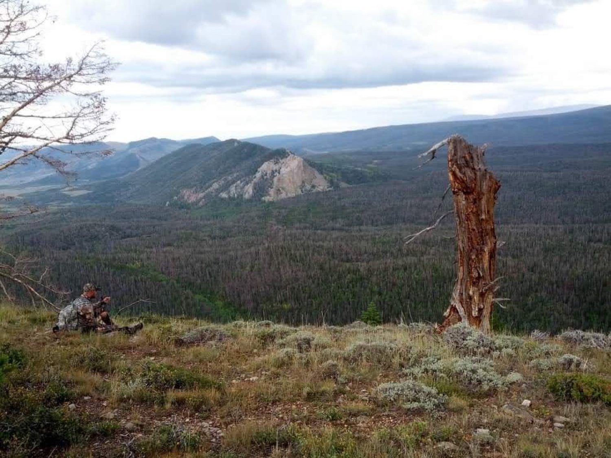
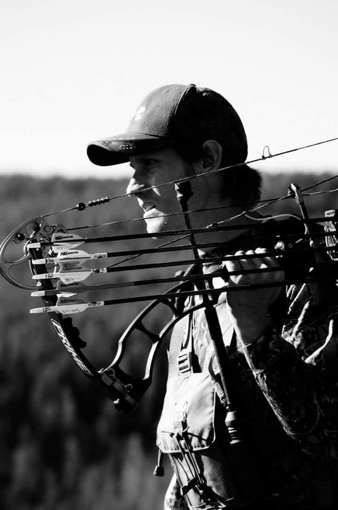
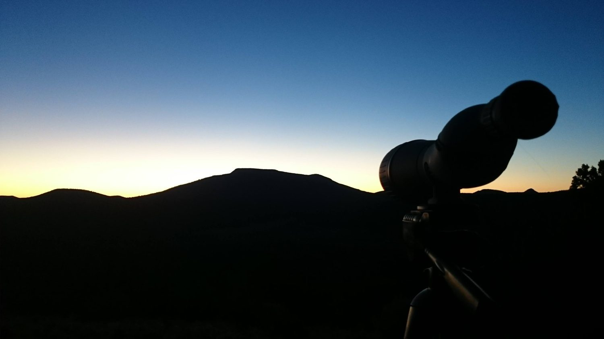
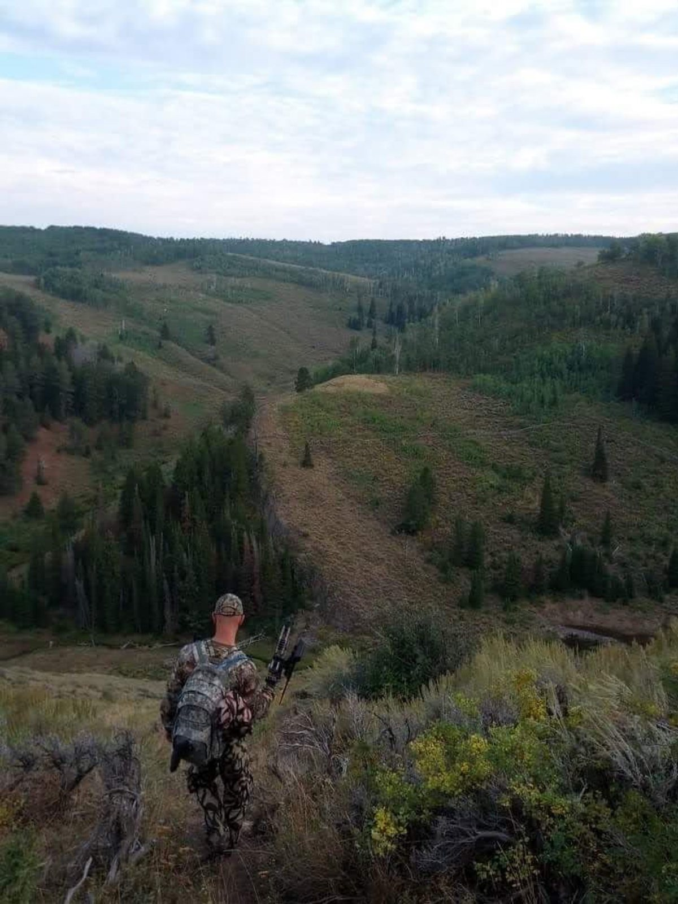
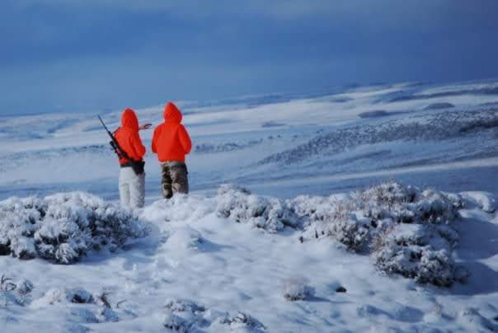
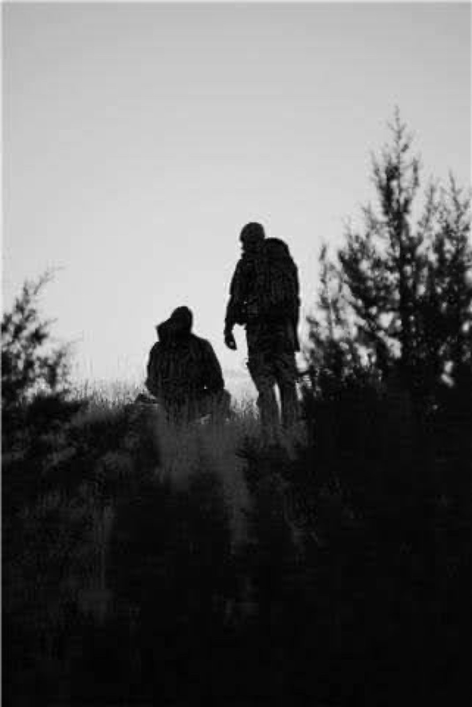
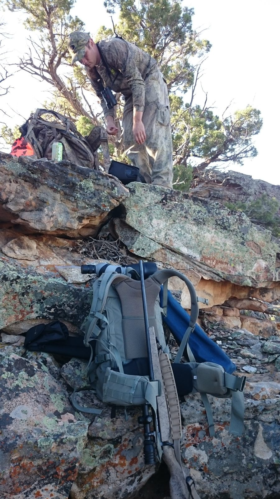
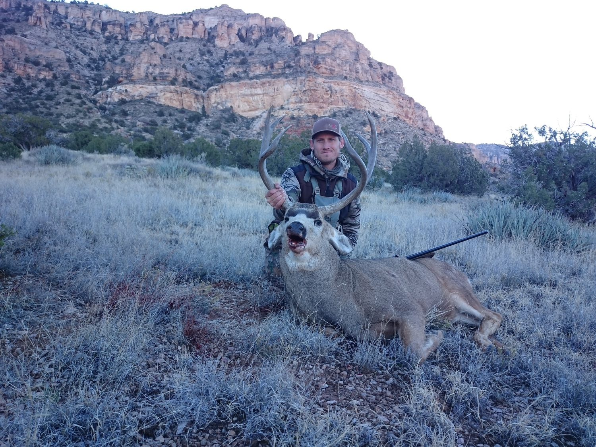
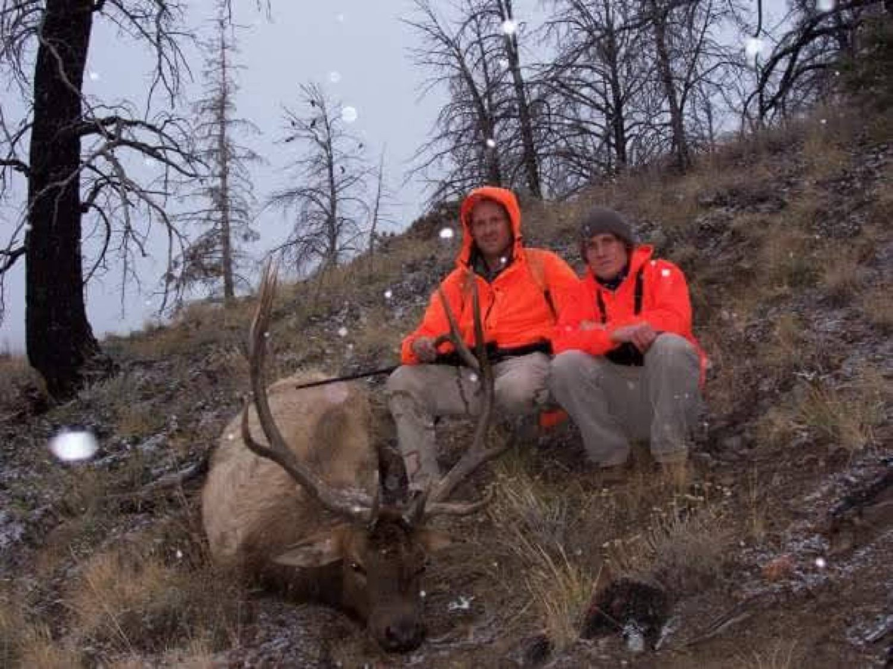

About Rokwilder

Hi, I'm Christopher, the hunter behind Rokwilder Scouting. I hunt Colorado public land, DIY, the hard way.
Most of my season is spent behind glass: up before light, sitting on a ridge, picking apart timber and parks until something moves. That's the part of hunting I love, and it's the part most people don't have time for.
Rokwilder is built for those hunters. I do the homework and the miles, then hand you a plan you can take into the field, from research to trophy pic.







Rokwilder Scouting started with a simple problem: you draw a tag, open the map, and stare at hundreds of square miles wondering where to start. The public data to narrow that down already exists. It's just scattered across a dozen agencies. UnitIQ puts it together, unit by unit.
Every package gets tested in the field. We're testing the packages in the field this season, and the model gets adjusted based on what turns up.
Family
Hunting's been in my family a long time. I'm the fourth generation. I grew up learning it the right way: work hard, respect the animal, follow the rules, and don't take shortcuts. My dad learned it from his dad, and he passed it on to me. These days my favorite part of the season is being out there with family, watching my sons, daughters, and nephews hunt, and passing on what my father and his father taught me. Rokwilder Scouting is built on that same idea. Put in the work, do it right, and share what you know.
Rokwilder Scouting is family owned and run. We've been hunting this country for generations, and now we want to share what we've learned so more hunters can get out there and do it right.
We're grateful to God for this country and the wild places in it, and we take seriously the job of caring for them and passing them on.

The name
Rokwilder comes from that Redman and Method Man track, Rockwilder. Had it on repeat for years. Dropped the c and it stuck. Used it as my gamer tag through a lot of late nights, then put it on a line of English setters we bred and ran in the field. Every time I built something I actually cared about, that song was playing. That's just what the name became. When it came time to start the scouting business, it was already the name. Didn't really look at anything else.
Get in touch
Email Christopher at christopher@rokwilder.com.